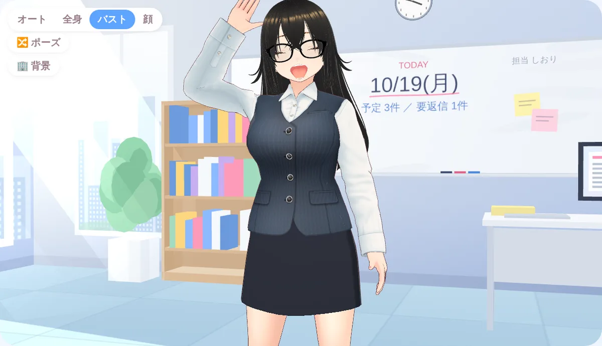
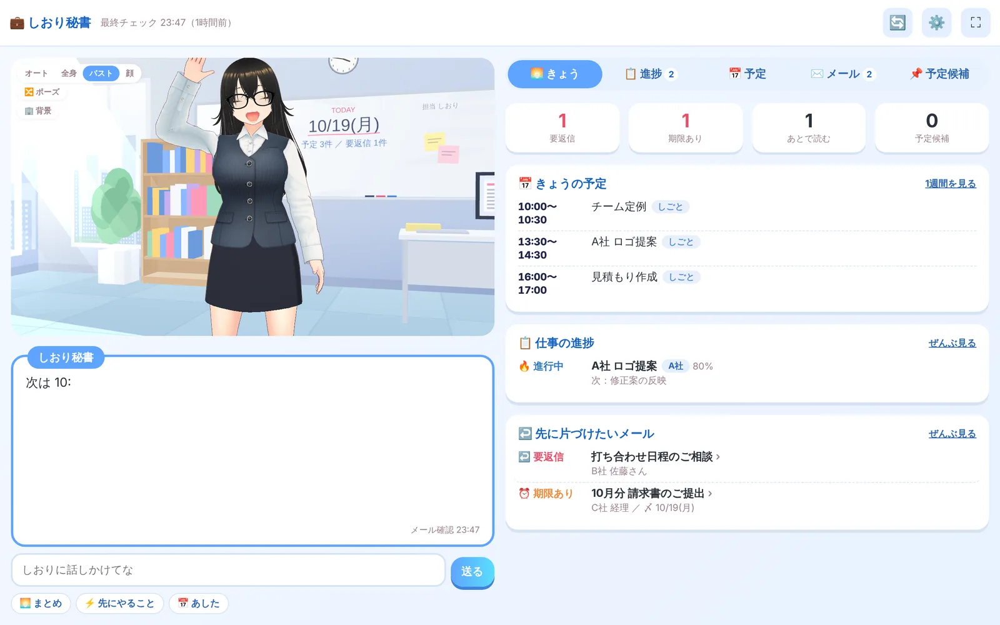
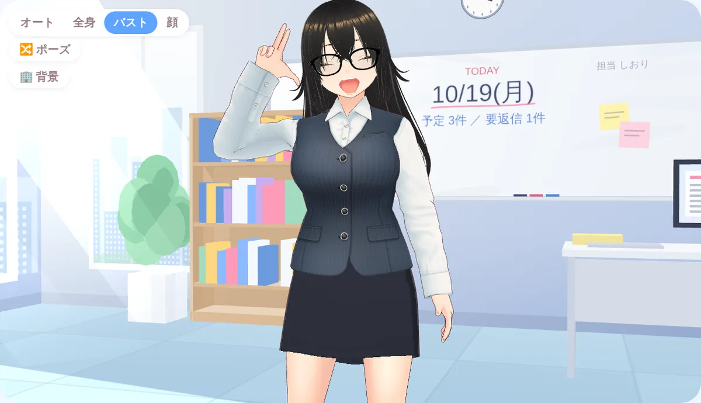
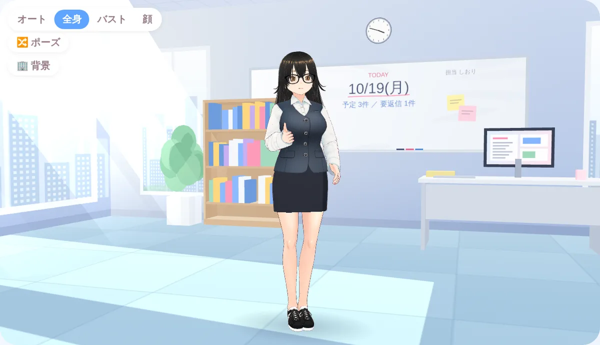

関西弁でしゃべる3Dの秘書「しおり」が、毎朝のメールと予定をまとめて、返信の下書きまで用意してくれる。話しかけるだけで、仕事の進みぐあいも覚えといてくれるで。

いつものGmailとGoogleカレンダーをつなぐだけ。しおりが朝いちばんに目を通して、やることを並べといてくれます。

メールを「要返信・期限あり・あとで読む」に仕分けて、きょういちばん大事なことを3行で教えてくれる。
返事がいるメールには、ていねいな下書きを用意。日程の相談なら、カレンダーの空きも見て候補を書いとくで。
「A社のロゴ、8割まで来た」と話すだけで記録。締切が近い順に、次の一手まで声かけしてくれる。
メールに出てきた打ち合わせの日時を見つけて予定候補に。ボタン1つでカレンダーに入れる準備をしてくれる。

しおりは、関西弁でしゃべるしっかり者の秘書。話しかけるとポーズや表情で返してくれるし、頭をなでたら、ちょっと照れて喜んでくれる。仕事の道具やのに、開くのがちょっと楽しみになる。それがしおり秘書のねらいです。
いちばん最初に使って、気になったことを教えてくれる方を募集しています。参加は無料。必要なのはGoogleアカウント（GmailとGoogleカレンダー）だけで、AIの利用料もこちらで負担します。アルファ版では、しおりとの会話は1日20回、メールチェックは1日3回までです。
下のフォームから申し込み。参加が決まったら、招待のメールが届きます。
届いたURLを開いて「Googleでログイン」。メールと予定を見る許可を出します。
呼び名やお名前、署名を聞かれるので答えるだけ。
しおりが毎朝メールと予定をまとめはじめます。週1回だけ再ログインをお願いします。
大事なメールを預けるアプリやから、できることをあえてしぼっています。

アルファ版は10名さまで締め切ります。使ってみた感想や「こうしてほしい」が、そのまま次の版になります。
アルファ版に申し込むお問い合わせ：info@saishonodesign.com